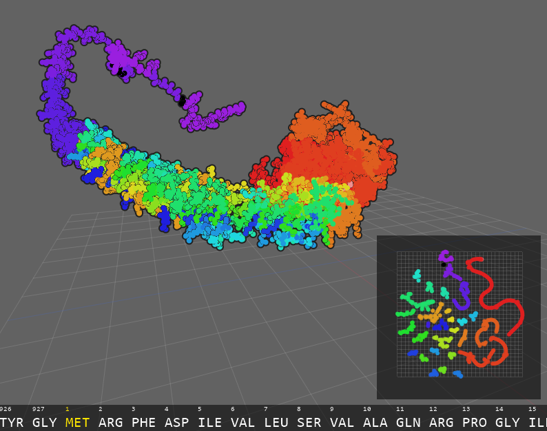

A program to visualize proteins and the function of its individual amino acids through deep learning.
The visualizer accepts a Protein Data Bank (PDB) format file encoding the structure and sequence of a protein. You can download proteins from RCSB Protein Data Bank to test out with this program. Installation and execution requires three steps:
protein-visualizer/prose/ according to the instructions on the ProSE GitHub repository.protein-visualizer/ and run python main.py [path to .pdb file].Before viewing a certain protein chain, the program generates and stores embeddings in
protein-visualizer/data/ for future use. Deleting stored embeddings can be a possible fix
to errors.
Left Mouse: Translate the camera and navigate the embedding space.Right/Middle Mouse: Rotate the camera.Up/Down Arrow: Increase/decrease atom point size.1/2/3: Switch between color modes.
RESIDUE_INDEX: Colors residues by their placement in the amino acid sequence.CLUSTER_INDEX: (Default) Colors residues by what cluster they belong to
in the embedding space. Shows similarity between amino acids.ATOM_TYPE: Colors residues by their atoms in the CPK color scheme. Overrides color palette setting.8/9: Switch between color palettes.
POISSON: A calm, natural set of hues.RAINBOW: (Default) Bright and colorful!O: Toggles atom outline.